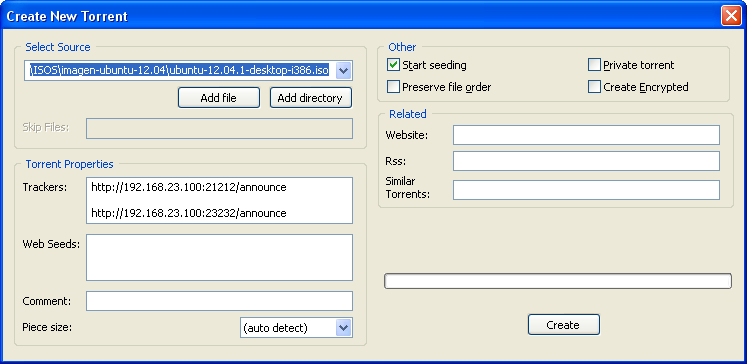
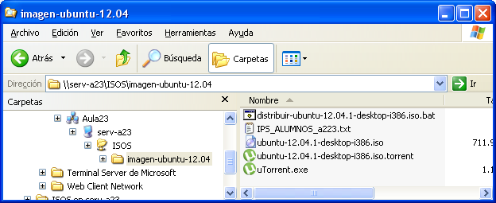

Bittorrent en el aula
Durante el desarrollo de ciclos formativos de grado medio y superior, es muy común la necesidad de compartir ficheros con los alumnos. Para ilustrar el problema, supondremos que el profesor necesita distribuir una ISO de instalación de Ubuntu (1.6 GBytes) en un aula con 15 ordenadores.
Solución 1: Uso de pen drive
El profesor pasa por cada puesto de alumno, copiando desde un disco duro externo o pen drive el fichero deseado. Suponiendo una tasa de transferencia de 25 MBytes/segundo, cada alumno necesita unos 60 segundos para conseguir su copia. Incluyendo el proceso de conexión y desconexión cada alumno necesita unos 2 minutos. Esto hace un total de 30 minutos para distribuir el fichero.
Solución 2: Uso de pen drive y copias de alumnos
Si cada alumno que consigue el fichero lo copia a un pen drive propio y lo distribuye a otros alumnos, puede copiarse el fichero mucho más rápido. Esta es una posibilidad teórica más que real, puesto que los alumnos no suelen entender el proceso y se tarda más en explicarlo que en aplicar la primera solución.
Solución 3: Uso de un servidor de ficheros
El fichero puede hacerse accesible desde la red, y cada alumno baja su propia copia. Este enfoque tiene algunas particularidades:
- En una red a 100 MB (con una tasa efectiva de 10 MBytes/s) la transferencia a un solo alumno tardaría unos dos minutos. El problema es que el servidor debe compartir su enlace entre todos los alumnos, por lo que el tiempo total empleado sería de 30 minutos
- En una red a 1 GB solo se necesitarían 3 minutos. Desgraciadamente, las aulas no suelen tener switches de estas velocidades
- Si se utiliza un servidor web en vez de un servidor de ficheros, las transferencias suelen comprimirse. En este caso, los tiempos pueden bajar a la mitad, e incluso menos (HTTP suele ser más eficiente que CIFS).
Solución 4: Uso de un protocolo de red p2p
El problema fundamental del servidor de ficheros es que una sola conexión debe dar servicio a todos los alumnos. Si conseguimos que cada alumno comparta su conexión con los demás, este cuello de botella queda resuelto. De esta forma, se consigue una transferencia casi simultánea a todos los alumnos del fichero, necesitando solo 3 minutos para una red a 100 MB.
Estos cálculos de servilleta muestran que el uso de BitTorrent puede ser muy interesante para repartir estos grandes ficheros en el aula. En rarst.net se dan unas instrucciones muy completas, que yo he adaptado a mis aulas. El resultado final es que, con la simple ejecución de un fichero BAT desde el puesto del profesor, ficheros de gran tamaño se distribuyen a todo el aula sin intervención de los alumnos :
- Copiar el fichero en una carpeta compartida (preferiblemente, de un servidor de aula). De esta forma, el fichero puede ser accedido "manualmente" con posterioridad.
- Instalar de μTorrent en el ordenador del profesor. Anotar el puerto utilizado para el protocolo BitTorrent (por ejemplo, 21212)
- Activar el tracker en el ordenador del profesor incluido en μTorrent: Options > Preferences > Advanced > bt.enable_tracker > set true
- Crear un torrent con μTorrent desde el ordenador del profesor con los ficheros deseados. Los ficheros se pueden especificar con la ruta UNC, o utilizar una copia local. El tracker a utilizar será http://hostname:port/announce , cambiando hostnamepor la IP del ordenador del profesor, y port por el puerto usado en el punto 2.

El fichero torrent se grabará en la carpeta compartida junto al fichero a distribuir y el programa μTorrent.exe

Utilizar psexec para ejecutar de forma remota μTorrent en todos los ordenadores de los alumnos, por ejemplo con un fichero BAT. Utilizo start /b para que el proceso se haga en forma paralela, sin tener que esperar a un ordenador para lanzar la orden en el siguiente:
set SLEEP=ping 192.0.2.2 -n 1 -w 10000 set DIRECTORIO=f:\isos set FICHEROTORRENT=%~dp0\ubuntu-12.04.1-desktop-i386.iso.torrent set FICHEROIPDEALUMNOS=%~dp0\IPS_ALUMNOS_a223.txt REM SE MATAN LOS UTORRENT DE EJECUCIONES ANTERIORES for /f %%i in ( 'type %FICHEROIPDEALUMNOS%' ) do start /b psexec \\%%i -d -s cmd /c taskkill /IM utorrent.exe /F %SLEEP% REM SE CREA EL DIRECTORIO for /f %%i in ( 'type %FICHEROIPDEALUMNOS%' ) do start /b psexec \\%%i -d cmd /c mkdir %DIRECTORIO% %SLEEP% REM SE EJECUTA EL TORRENT for /f %%i in ( 'type %FICHEROIPDEALUMNOS%' ) do start /b psexec \\%%i -c -v -d -s -i %~dp0\utorrent.exe /NOINSTALL /HIDE /DIRECTORY %DIRECTORIO% %FICHEROTORRENT%
Y por último, comprobar que está funcionand o. El fichero "aparecerá" en los ordenadores del aula en pocos minutos ☺
Posibles problemas con PsExec
- En algunos sistemas, no es posible arrancar un servicio que interactue simultáneamente con la red y el entorno gráfico. Puesto que
PsExecarrancautorrent.execomo un servicio, a veces será necesario arrancarlo sin el parámetro-i - En algunos sistemas, la cuenta
SYSTEMpuede no tener permisos para acceder a una unidad compartida. En ese caso pueden usarse los parámetros-uy-ppara especificar un usuario y una contraseña.